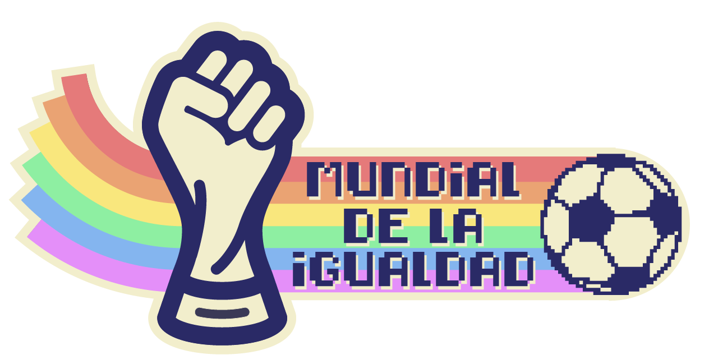

El Mundial de la Igualdad es una iniciativa que busca que los medios tradicionales y alternativos, organizaciones, clubes deportivos y marcas interesadas en el fútbol difundan, desarrollen y promuevan contenidos con una agenda social y de género más responsable.
Hackaton Argentina
El sábado 14 de abril empieza el primer tiempo del mundial de la igualdad. Te esperamos para empezar a palpitar el Mundial con una hackaton, historias de las mujeres en el fútbol contadas por sus protagonistas y feminismo
Polideportivo Boedo de San Lorenzo, José Mármol 1715, CABA. 12 a 20hs
Hackaton Colombia
Próximamente
Hackaton Perú
Próximamente
Así quedaron los grupos
Grupo {{ group.group.toUpperCase() }}